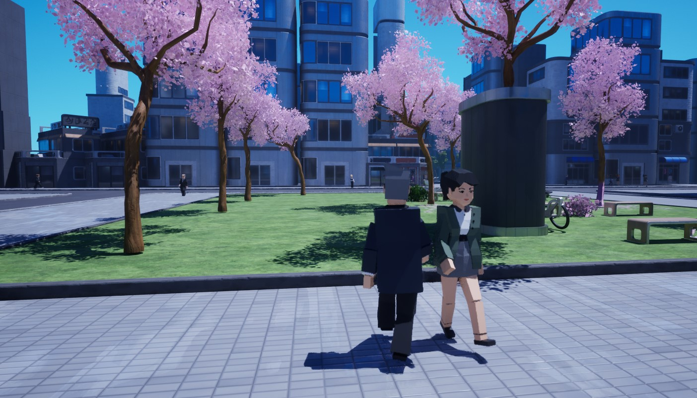

Game Development Portfolio

For the last 5 years, I have been developing a portfolio to display my ability to create interactive experiences of my own designs. I started my journey at Havering Sixth Form College in September 2021 when I started my Creative Media Practice course earning 3 Distinction*'s at the end of the 2 year course. At that college, I learned the basics to various parts of the Game Development process such as concept art, mechanics design/scripting, and 3D modelling. I learned how to use the Unity and Stencyl game engines to make a total of 4 full games while there. I also learned how to model in Blender to create assets for my 3D games
After successfully completing my course in college, I moved on to attend Staffordshire University with an unconditional offer taking Game Development BSc taking 6 modules in the first year and currently having completed 2 more modules in my second year. These modules so far taught me how to use various software to aid the production process. These softawres include: Unreal Engine, 3DS Max, Substance Painter and Substance Designer. I also learned how to code in C++ for a text based game and Unreal Engine.
Staffordshire University Projects
Senior Collaborative Project (Phony Phantoms)
Team Project
ViewReverse-phasmophobia game where the player plays as a ghost. I worked as an AI programmer, implementing a Hierarchical Finite State Machine and stepping up as a team lead to coordinate the 22-person team.
Compact Rhythm
ViewA mobile rhythm game featuring original music composed by me, featuring save-game systems, custom tile-type controls, and ad-based monetization.
Auto Ants 2
ViewAn ant colony simulator built in UE5 featuring scout/gathering missions, population control mechanics, and room-building systems.
Dissertation Project (NPC AI Research Paper)
ViewA research paper focused on NPC AI systems.
PCG (Council Flat Generator)
ViewA procedural generation tool that builds wide apartment blocks along splines with randomized room layouts and floor counts.
Memento Jerry (VR Project)
ViewA VR "Disruptive Child Simulator" built in Unity, featuring complex interactive water physics, a watch-based UI, and AI that tracks the player.
Junior Collaborative Project (Adrenaline Junkie)
Team Project
ViewA parkour shooter in UE5. Worked as a combat programmer, implementing gun class frameworks, critical hit systems, and ricochet mechanics.
Tools Development (Dungeon Generator)
ViewMy first Unreal Engine editor tool, featuring a GUI for grid-based dungeon layout, room/corridor allocation, and corridor length customization.
AI Programming Fundamentals
ViewA modular Unity project demonstrating AI concepts including steering behaviours, pathfinding (Dijkstra/A*), and decision-making systems (FSM/Behaviour Trees).
VFX Prototype | Unreal Engine 5.4 / Substance Designer | Oct - Nov 2024
ViewNot a game but instead a project working on VFX for a character utilising Unreal Engine's Niagara System and other tools.
C++ Unreal Engine Prototype | Unreal Engine 5.4 | Oct - Nov 2024
ViewA first person shooter prototype made using a mix of C++ and blueprints inside Unreal Engine 5.
Wacky Taxi | Unreal Engine 5.2 | Mar - May 2024
ViewTaxi driving simulator earning as much money as possible while successfully delivering happy passengers to their destinations.
Ghost Town | Unreal Engine 5.2 | Mar - May 2024
Team Project
ViewMy first real group project with a team of 3-5 members making a survival game with an objective to repair a radio tower while managing hunger and thirst.
Pay Up | Unity | Jan - Feb 2024
ViewA 2D top down adventure game where I created quests, melee combat and quest givers.
Mechanics Prototype | Unreal Engine 5.2 | Jan - Feb 2024
ViewMy first time using Unreal Engine 5 and its blueprints. I used a framework based around a tank shooter game to create enemies, other gun types, and brand new mechanics like doors and teleporters.
Text Based C++ Game | Windows Console | Oct - Nov 2023
My first time using C++ to program a console application which displays the setting the player is in and what things they can interact with to let them pick up quests and deliver them to other characters.
Havering Sixth Form College Projects
Memento Mori | Unity | Feb - May 2023
ViewA sandbox game where the player plays as a ghost and must move around objects in characters homes to drive them insane before the player's soul fades away.
Interactive Portfolio | Unity | Oct 2022 - Jan 2023
My first time using Unity to make a complete project and my task was to create a portfolio showing off work completed throughout the course such as blender models, animations, and previous games. I also included a separate game which I made for fun during my free time called "Collect the Dales" (listed under the "Extra Projects" section) to show off extra mechanics development skills I made over the course.
Metamorphs | Stencyl | Nov 2021 - Feb 2022
ViewMy first ever complete game. It is a 2D platformer made in Stencyl to develop mechanic scripting skills.
Extra Projects
PLANE GAME!!!! | Unity | 3 day game jam (Sep 2023)
Team Project
ViewA quick game jam I developed the mechanics for. Its about managing flights and making money from flying passengers.
Collect The Dales | Unity | Sep - Dec 2022
ViewMy first complete Unity project made while learning how to script in C# for Unity. I made the base game for fun but then continuously added to it whenever I wanted to learn how to develop a new mechanic that might fit. It takes place in the backrooms and the player is constantly being followed by an entity which can only be escaped by killing it or collecting the Dales.